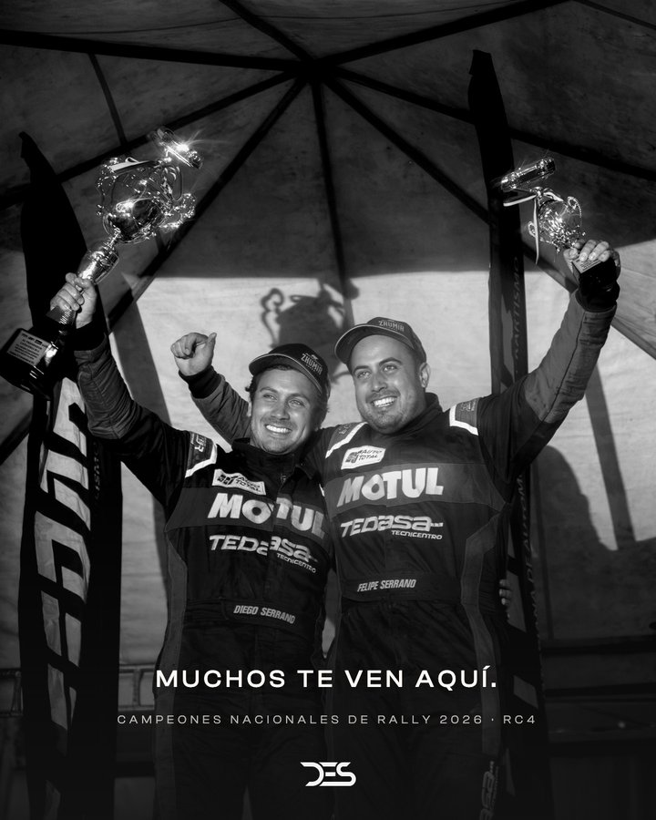
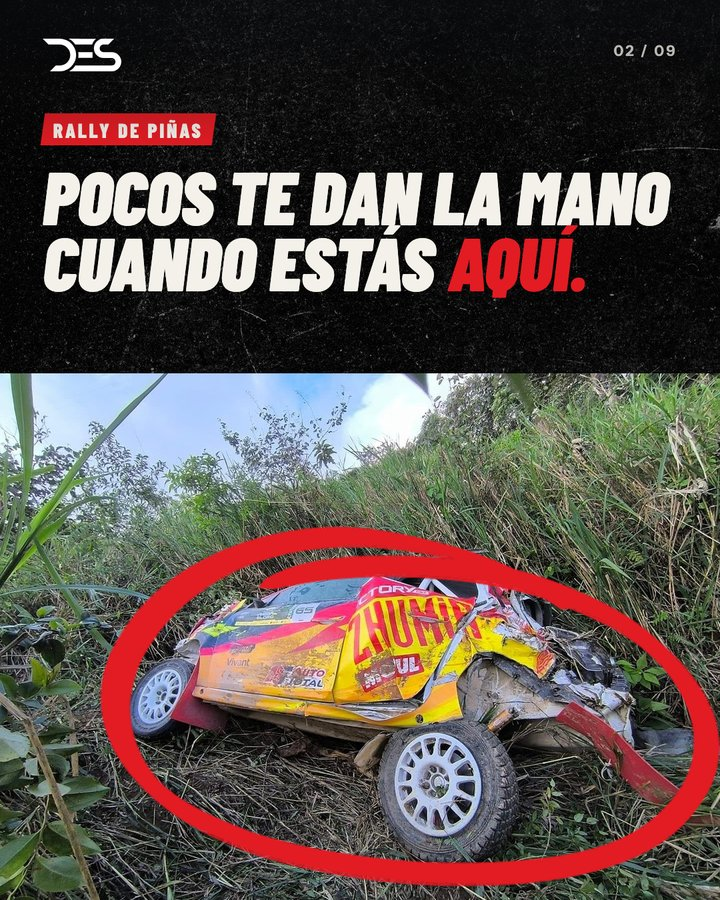
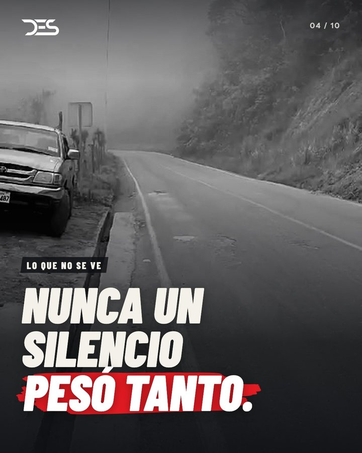
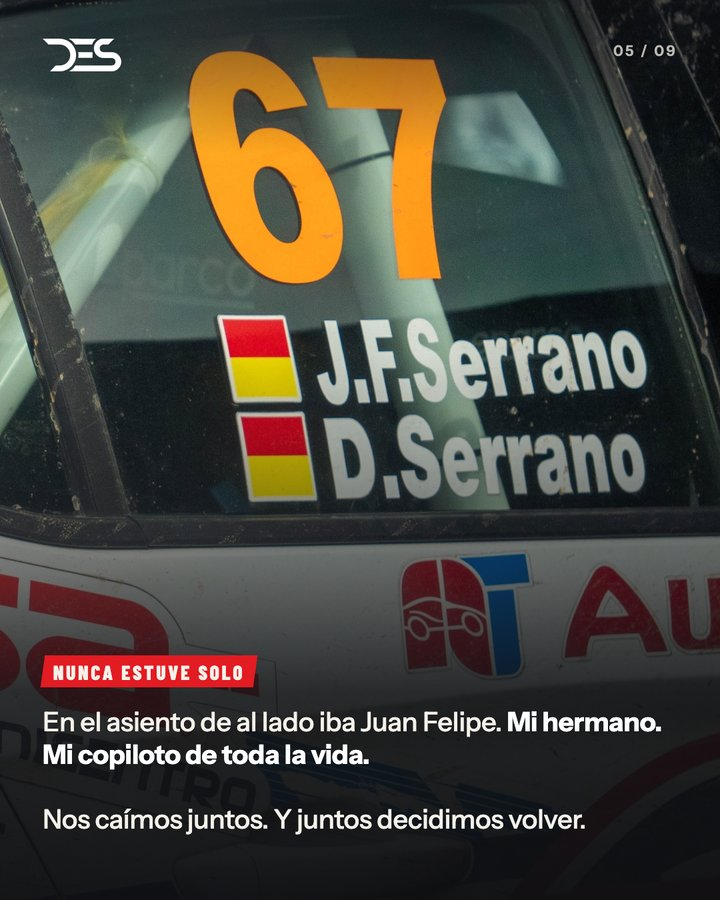
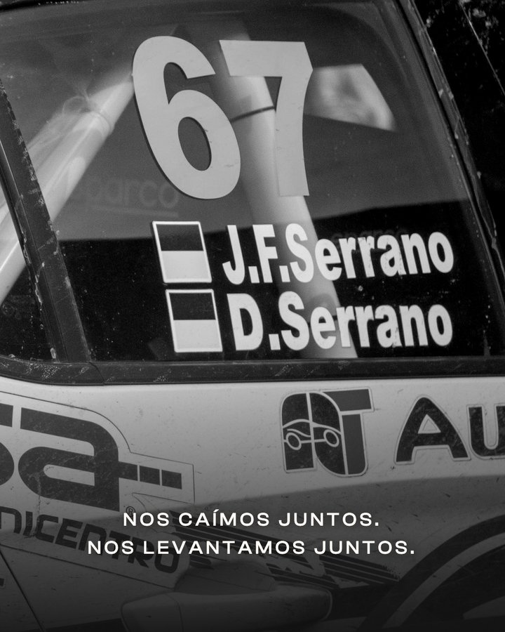
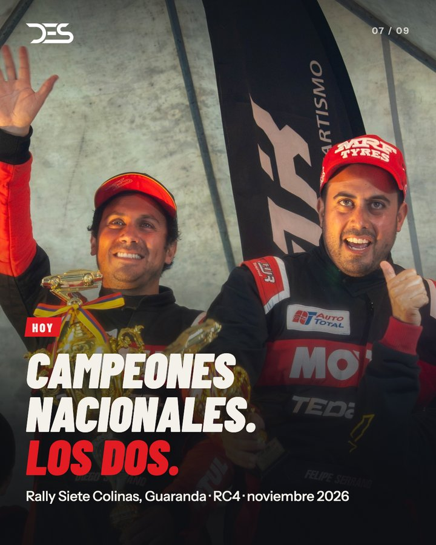
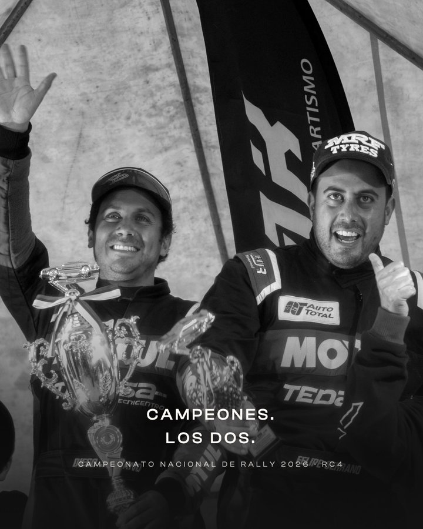
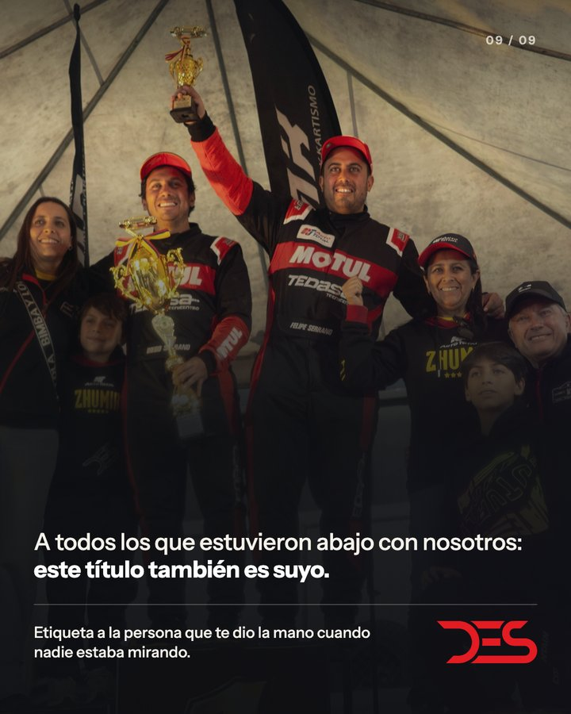

Carrusel · Noviembre 2026
Carrusel · Noviembre 2026
Post de Diego Serrano · 9 láminas
Muchos te ven aquí.
Muchos te ven aquí.
Pocos te dan la mano
cuando estás aquí.
Del barranco de Piñas al título nacional de rally 2026 en RC4, junto a su hermano y copiloto Juan Felipe. No es un "véanme, soy campeón": es una invitación a darle la mano a quien está en el piso.
diegoeserranoGuaranda, Ecuador








Copy del post
Muchos te ven en el podio. Pocos te ven en el barranco.
En Piñas, el auto no respondió y terminamos barranco abajo. Juan Felipe y yo íbamos adentro. Después vinieron días en los que no sabía si iba a volver a subirme a un auto de rally.
Hoy somos campeones nacionales de rally 2026 en RC4. Los dos. Juntos, como siempre.
Este título no es solo nuestro. Es de mi familia, del equipo y de cada persona que nos dio la mano cuando no había ningún trofeo que celebrar. Y de las marcas que siguieron creyendo en nosotros.
Si hoy ves a alguien en el piso, no esperes a verlo en el podio para darle la mano.
Etiqueta a la persona que te dio la mano cuando nadie estaba mirando 👇
@desracing @factorybike @zhumirecuador @tedasa
#RallyEcuador #CampeonatoNacionalDeRally #RC4 #Guaranda #DESRacing
Sugerido: publicar como colaboración con @desracing (y con Juan Felipe si tiene cuenta).
Descargar para publicar
Descargar todo (.zip)Archivos a 1080 × 1350. La lámina 3 es un video de 5 s con el sonido real; va en tercer lugar dentro del mismo carrusel.


Cómo se cuenta la historia
- Podio. El momento que todos ven: los dos hermanos con los trofeos en Guaranda.
- Barranco. La misma frase, al revés: el auto en la maleza después de Piñas.
- Desde adentro. Cinco segundos reales de la cámara a bordo. Sin dramatizar.
- Lo que no se ve. Las dudas de volver, en blanco y negro.
- Nunca estuve solo. Los dos nombres en la puerta: J.F. Serrano y D. Serrano.
- Los de siempre. Un niño mira el abrazo: los que estuvieron sin trofeo de por medio.
- Hoy. Campeones nacionales de rally 2026, RC4. Los dos.
- El mensaje. No esperes a ver a alguien en el podio para darle la mano.
- Gracias. El título también es de quienes estuvieron abajo, con una invitación a etiquetar.
Confirmar con Diego antes de publicar
- Fecha del accidente. La prensa ubica el accidente de Piñas en junio de 2024: Rally de Piñas, auto #65, el mismo número que se ve en la foto. Por eso las láminas no dicen "hace un año". Si Diego quiere poner la fecha, se agrega en la lámina 2.
- Categoría. El título 2026 es en RC4. En Guaranda quedaron 1.º en RC4 y 3.º en la general, así que la portada lo dice tal cual.
- Marcas. Las etiquetas del copy son solo las que aparecen en la biografía de Diego. Faltan por confirmar Motul, Auto Total, MRF Tyres, Republic, La Taquería y las demás marcas que estuvieron.